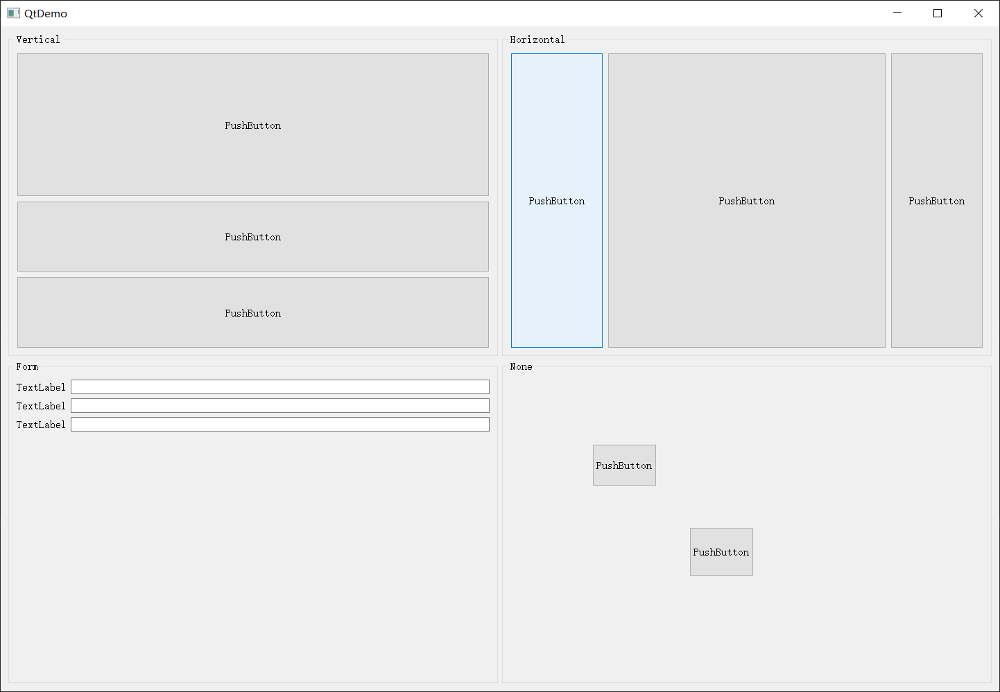

Qt系列（二）——布局
前言
这篇主要聊下关于 Qt 中布局的应用，也是一个界面设计的基础。
布局
Qt 控件列表中最上面就是布局，自带的有四个布局
- Vertical Layout(纵向布局)
- Horizontal Layout(横向布局)
- Grid Layout(栅格布局)
- Form Layout(表单布局)
建议是通过放一个Group Box来做布局的父级，通过右键设置布局来修改对应的 Widget 类的布局。
双击.ui 文件，默认应该是打开了 QDesigner，删除默认生成的工具栏相关的，先来四个 GroupBox 丢到主窗口中，如下操作设置为栅格布局（四等分）。
设置之后，我们来看下效果。
布局属性主要是设置上、下、左、右间距（同 css 中的==margin-top/bottom/left/right==）,行间距、列间距，布局中控件比例，布局尺寸约束。
在第一个、第二个 Group 中丢三个PushButton，第三个丢几个Label与Line Edit，第四个丢几个PushButton。（这只是为了演示）
接下来我们分别设置第一个 Group 为纵向布局，第二个为横向布局，第三个为表单布局，第四个不设置，然后给所有的 button 设置 sizePolicy 都为 Expanding，根据自己的想法设置布局中控件占比，比如我设置纵向与横向的是 2:1:1，1:3:1。
如果丢的位置足够准确的话，不出意外应该是如下界面：
做完这些可能会有些迷，搞这个干啥，直接拖控件放好对应的 x,y 位置不是更省事，这里我们来运行下程序，看下效果，可以对应调整下界面大小就清楚了。

小结
布局个人感觉，一是为了界面整洁统一，二是为了方便做自适应，所以接触 qt 最好还是从布局开始，方便自己去放控件，也方便后续有不同分辨率大小的需求时不至于改动太大（当然这也不是万能的，比如某些自绘控件或者比较复杂的界面布局时还是直接丢设置 xy 最省事）。
Qt系列（二）——布局
http://www.aprilblank.top/qt/layout.html